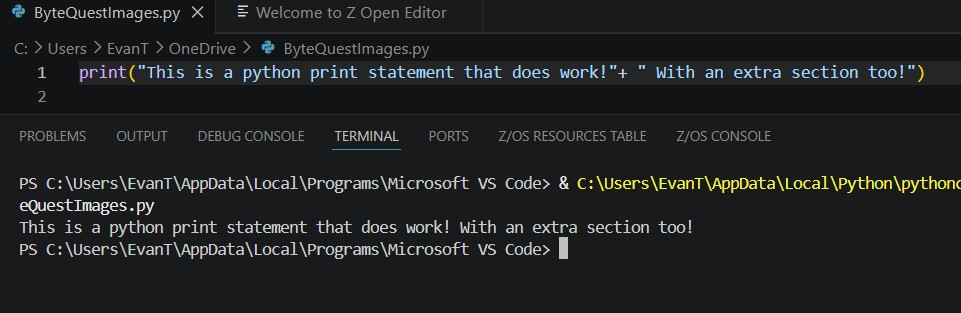
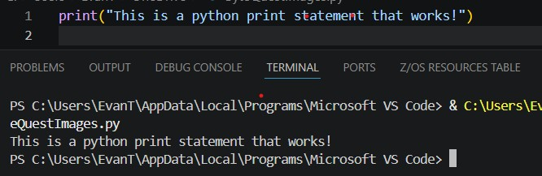
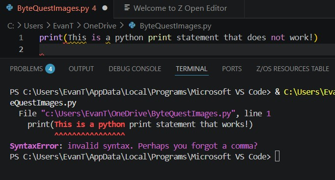

Printing is one of the most basic yet helpful function in python, capable of printing information to the console.
‘Print()’ statements are unbelievably useful because can print a sentence, a function, a combination of different values and can even do math!
what enables multiple options inside a print statement is the ‘+’ operator. It helps put multiple things inside a print statement

It’s important to know that you need to put “” or ‘’ around any strings you want to print, or else the code will error.
With quotes:

Without quotes:

But remember, that is only for a string, not for ints/numbers or functions, which we will go over later in the course.
{% include 'partials/article_navigation.html' %} {% endblock %}